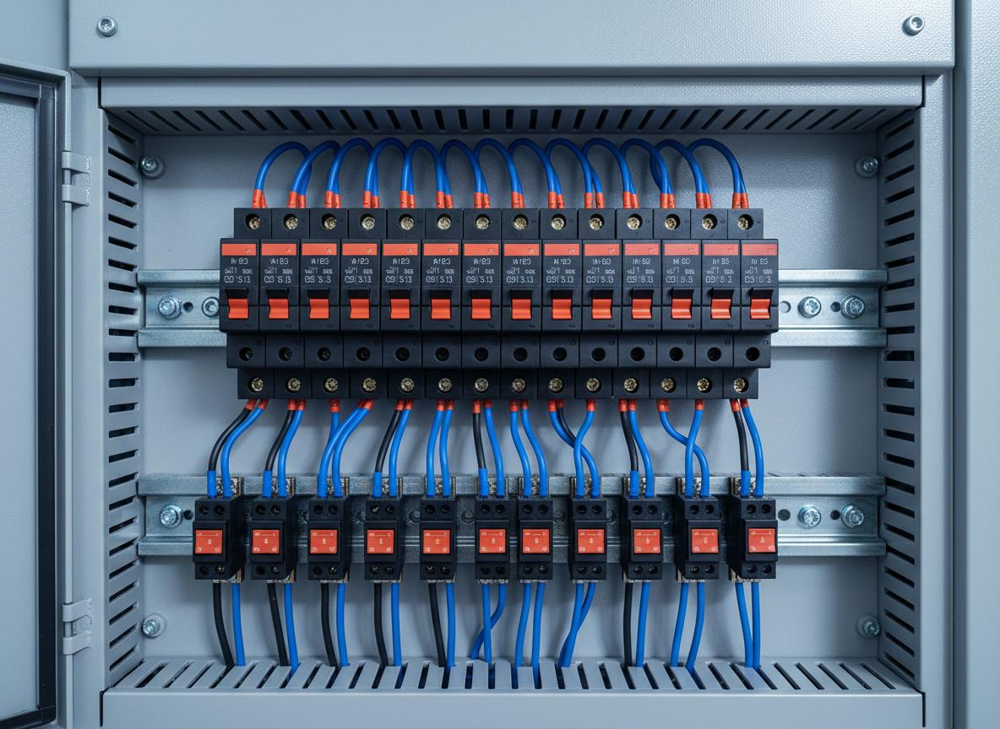
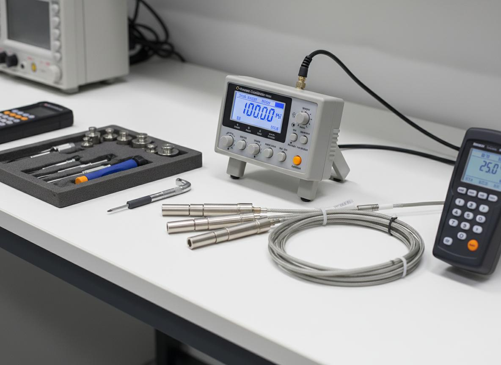

Service 01
Electrical Engineering
Our electrical engineering team designs, installs, commissions, and maintains electrical systems for a wide range of industrial and commercial clients. We work to both local and international standards, ensuring that every installation is safe, efficient, compliant, and built to last.
- Electrical design, installation, and commissioning for industrial and commercial facilities
- Power systems design, sizing, and installation including distribution boards and panels
- Renewable and alternative energy system design and installation
- Industrial and commercial automation and control systems integration
- Electrical testing, fault diagnosis, and repair services
- Scheduled preventive maintenance programs for electrical assets
- Emergency electrical support for operational facilities
Service 02
Mechanical Engineering
Our mechanical engineering team delivers fabrication, installation, and maintenance services for industrial facilities across Rivers State. We work with structural steel, pipelines, pressure systems, and industrial equipment - applying engineering best practices at every stage of work.
- Structural steel fabrication and welding to specification
- Pipeline design, installation, and hydrostatic pressure testing
- Industrial equipment installation, alignment, and commissioning
- Rotating equipment maintenance, overhaul, and repair
- Pressure vessel inspection, repair, and certification
- Mechanical maintenance contracts - planned and corrective
- Skid fabrication and installation works

Service 03
Instrumentation & Calibration
Accurate instrumentation is critical to the safe and efficient operation of any industrial facility. PROLED provides comprehensive instrumentation installation, calibration, and certification services using approved calibration equipment and documented procedures.
- Instrumentation installation, loop checking, and commissioning
- Process control system configuration, testing, and startup support
- Calibration of pressure, temperature, flow, and level instruments
- Instrument verification, testing, and functional inspection
- Preparation of calibration procedures and calibration records
- Statutory certification of process instruments and safety devices
- Instrument database management and tag register maintenance
Service 04
Engineering Consultancy
Our consultancy team brings structured engineering thinking, project management expertise, and deep technical knowledge to complex challenges. Whether you need full project management service, technical peer review, or document control support, PROLED provides the professional consultancy resource your project requires.
- Project management - planning, scheduling, coordination, and reporting
- Technical advisory services and engineering peer reviews
- Feasibility studies and project scoping
- Document control - engineering drawing management, revision control, and filing
- Design review and constructability assessments
- Commissioning and start-up supervision
- Engineering project supervision and QA/QC
Service 05
Technical Training Programs
PROLED's technical training programs are developed and delivered by experienced engineers with real-world industry experience. Our courses combine theoretical instruction with hands-on practical sessions using actual engineering equipment, ensuring that participants leave with skills they can immediately apply on the job.
- Electrical engineering fundamentals and advanced installation training
- Mechanical engineering - fabrication, fitting, and maintenance practice
- Instrumentation and calibration technician training programs
- Process control systems operation and troubleshooting
- Health, safety, and environment (HSE) in engineering operations
- Hands-on practical sessions using real industrial instruments and tools
- Certification of competency issued upon successful completion
Not Sure Which Service You Need?
Contact us for a free consultation. Our team will help you identify the right solution for your project.
Get Free Consultation